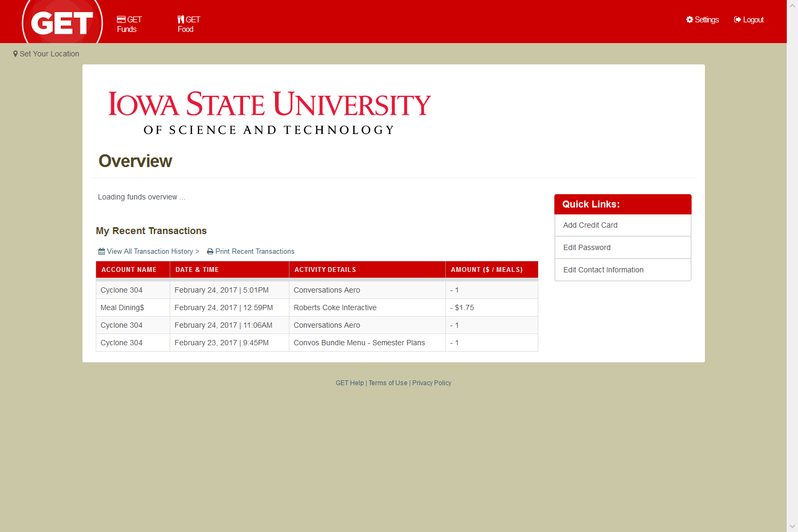
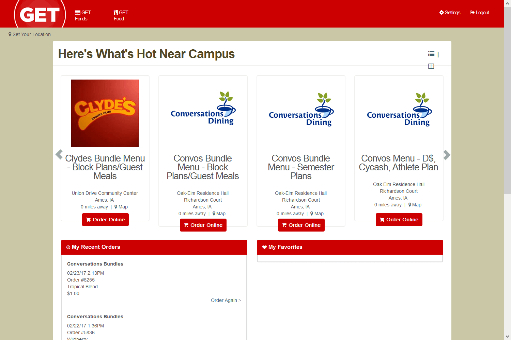
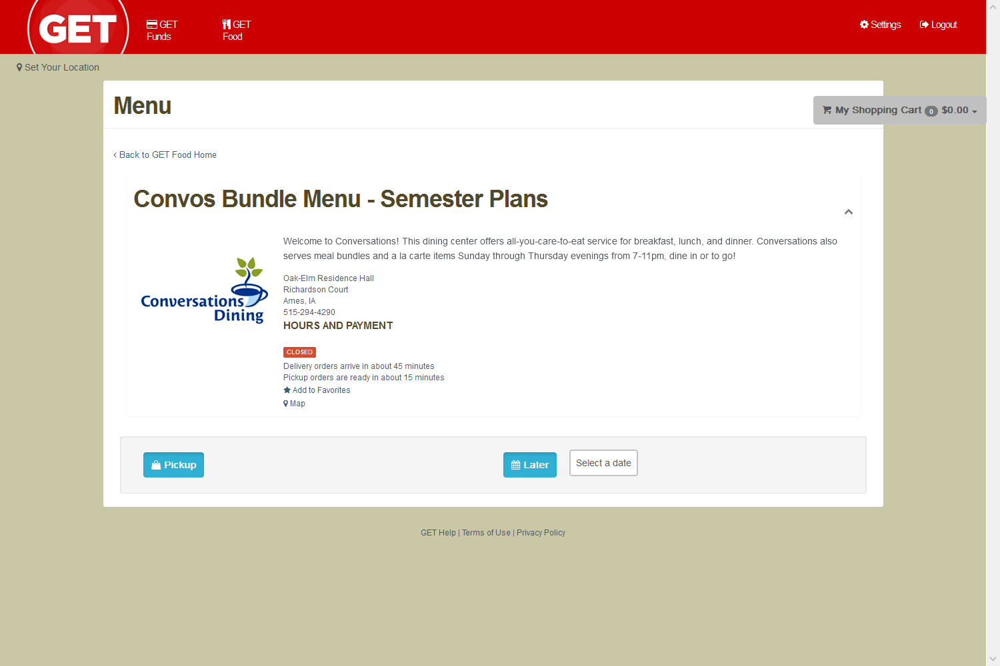
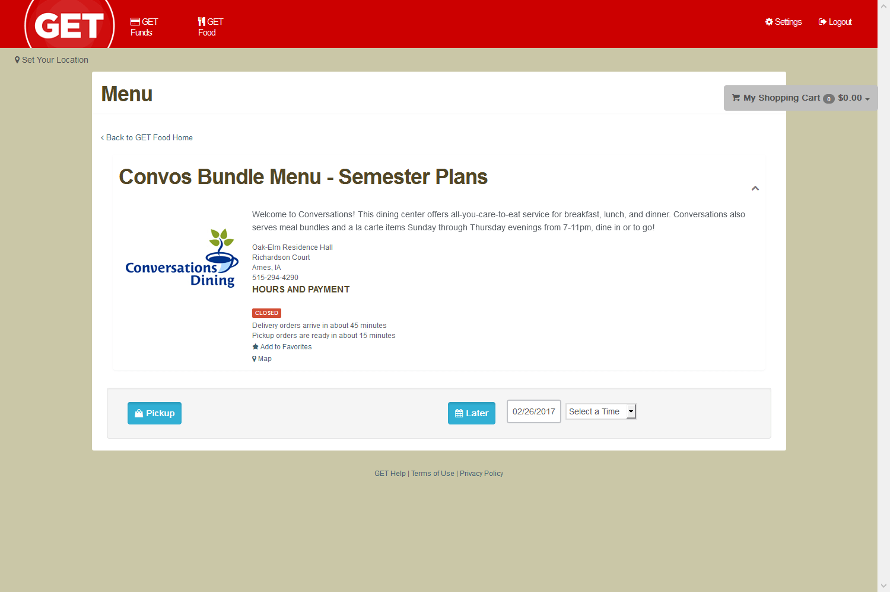

Hack ISU Spring 2017
Hack ISU was my first hackathon, and one of my strongest learning experiences with coding and team building. I had just finished my first semester as a computer engineering major, and I had a basic knowledge of coding in C and Java, neither of which was good enough to get me or my partner where we wanted to be. We spent a few hours trying to come up with a good idea to work on, eventually realizing that we should've had some sort of plan when we arrived. Our first idea that we really started to work on was a social media platform that allowed you to take pictures of a location and post them for others to view so that they could see what the area looks like at different times throughout the year. Neither one of us had nearly enough experience with web-based design to get anywhere, so we moved on and spent more time brainstorming, eventually working independently.
I had an idea for an app designed for my Pebble that I could actually use, one to order smoothies from a food vendor on campus, Conversations, with the push of a button. I ordered a wildberry or strawberry banana smoothie from them every night at around 10pm every day I could, only missing a handful of days in the last quarter.
I was and still am pretty proud of my consistancy.
I looked to the internet hoping to find a tutorial of some sort that I could use as a crutch to get me started. I stumbled upon a hackathon project from a previous year in which the designers made an app to order Chipotle from a pebble by de-compiling the app designed for mobile and immitating the commands that would sormally be issued by the app to the server. I decompilied the GET (the service Iowa State uses to queue meal orders) app to try it for myself, but I was way in over my head, especially since I was working alone and the Chipoltle app was developed with a team.
I was out of ideas from there until I talked to a programmer in his senior year, learning about PhantomJS, a headless web browser that worked with JavaScript, one of the languages pebble can use. I worked for hours setting up a program that would run a list of commands that would log me into the GET website, navegate to the correct page, and order my food for the correct time, taking a screenshot at each point so I could tell if it was working.
   I was very, very close at being successful, but ran into some problems with drop-down boxes. It was also late at that point, so I went to bed.
I never figured out exactly how I would bridge the gap from the JavaScript on my PC to my pebble, or if it's even possible with what I was using. My back-up plan was to have a raspberry pi server that I could send commands to from my phone, and therefore my watch, that would do these sorts of things. I never ended up working on the project anymore because of how busy I became. The GET portion would also become irrelevent the following year due to Iowa State scrapping meal bundles, and it wasn't worth the time to have it work for a couple short weeks. Either way, it was a great introduction to using JavaScript I wouldn't have had had I not shown up.
166 Keytar
Computer Engineering 166 is a one credit class I had the pleasure of taking the second semester of my freshman year of college. It was an optional class based around my learning community with the purpose of developing teamwork and problem solving skills in a way that would be applicable to the real world. It only met twice a week as a two hour lab, but that was enough time to get decently far on our project, the keytar.
EDD Modular Textbook
This project was from my senior year of high school and my third Project Lead the Way class. Engineering Development and Design, or EDD, focused on the engineering process grom the ground up, gantt charts and all. Our final report ended up being 65 pages, and goes very in-depth about the problem we tried to solve, how we went about trying to solve it, and our final solution.
Click here to view the full report